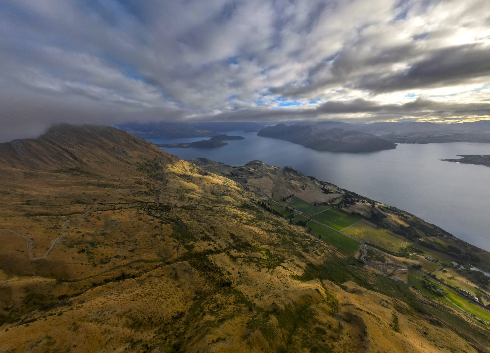
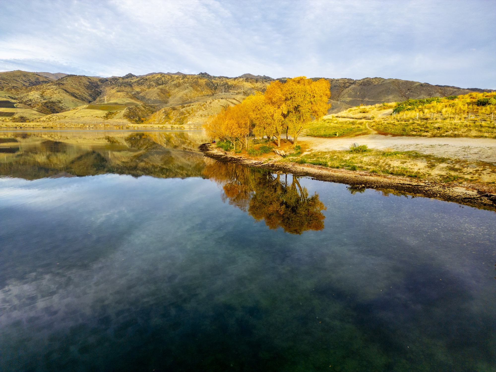
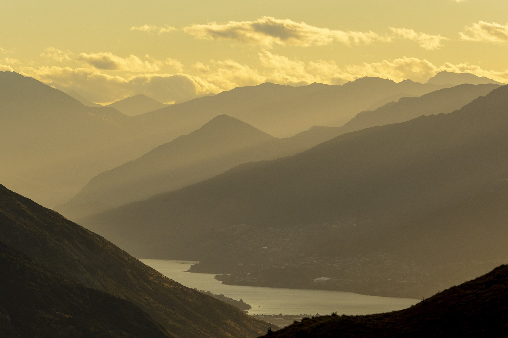
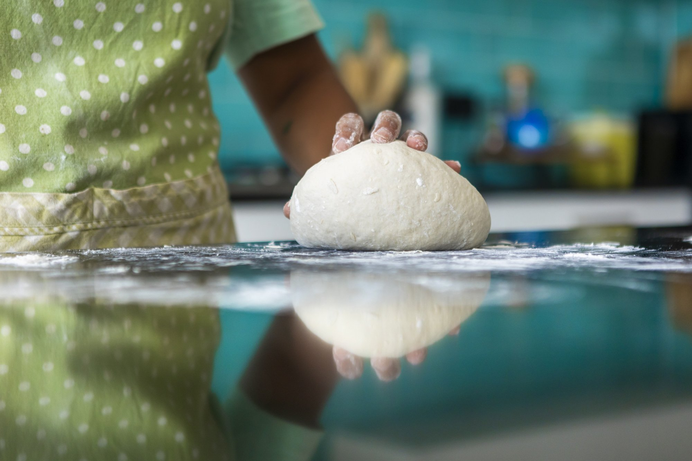

BULGANEA × JUAN AIZPURU
Viajes que se sienten
antes de empezar.
Fotografía y vídeo para mostrar vuestras rutas, vuestros guías y las experiencias que hacen especial cada viaje.
DESCUBRIR LA PROPUESTA ↘UNA PROPUESTA PARA BULGANEA
Vuestros viajes,
contados desde dentro.
Diseñáis viajes a medida por Bulgaria y los Balcanes con el conocimiento de vuestro equipo local. Mi propuesta es crear imágenes que ayuden a viajeros y agencias a imaginar cómo es vivirlos.
Viajaría con vuestros guías para fotografiar y grabar una de las rutas que queráis impulsar. Juntos elegiríamos las etapas, experiencias y personas que mejor expliquen lo que ofrecéis.
Podéis utilizar el material final en vuestra web, presentaciones y campañas; si lo necesitáis, mi equipo y yo también podemos desarrollar una campaña completa.

MIRADA DE VIAJE · TRABAJO ANTERIOR
Paisajes que invitan
a descubrir más.
IDEAS PARA VUESTROS PROGRAMAS
Material para enseñar
lo que vendéis.
Podemos empezar por una de vuestras rutas y adaptar la producción a los viajeros o agencias que queráis alcanzar.
01Cultura y naturaleza en la tierra de los tracios+
Seguir una selección de etapas de vuestro itinerario entre Sofía, Veliko Tarnovo, Plovdiv, Bansko y Rila. Mostrar los paisajes, el patrimonio y los momentos de viaje con una mirada coherente y útil para promocionar la ruta.
02Los guías y las experiencias locales+
Retratar a quienes acompañan al viajero y las actividades que hacen diferente cada itinerario: encuentros, tradiciones y visitas elegidas con vuestro equipo.
03Sabores y estancias con carácter+
Crear fotografías y vídeo de gastronomía, productos, alojamientos y hospitalidad para dar una imagen completa de las experiencias que proponéis.
04Vuestro material o una campaña completa+
Entregar una colección para vuestra web, catálogo y presentaciones a agencias, con los usos acordados para vuestros colaboradores. También podemos concebir y producir una campaña juntos.
SELECCIÓN DE JUAN AIZPURU
Paisaje, personas
y detalles.
Una selección de trabajos anteriores. La propuesta consiste en viajar con vuestro equipo y crear imágenes nuevas en Bulgaria y los Balcanes, adaptadas a vuestros itinerarios.


PRODUCCIÓN A MEDIDA
Vuestro conocimiento local.
Una visión compartida.
Empezamos escuchando qué rutas y mercados queréis promocionar. Con vuestro equipo y vuestros guías locales elegimos lugares, participantes y calendario.
El proyecto puede cubrir una ruta o varios destinos durante el tiempo necesario. La producción, los materiales finales y sus usos se acuerdan según vuestras necesidades. Juan conserva la propiedad del material original.
SOBRE JUAN AIZPURU
Una mirada personal.
Un equipo profesional.
Soy Juan Aizpuru, fotógrafo y realizador de vídeo con base en Bilbao. Tengo experiencia en viajes, naturaleza y deportes, y viví diez años en Suiza. Trabajo con mi equipo y colaboradores locales para adaptar cada producción al lugar y al proyecto.
VER MI TRABAJO ↗FITUR 2027 · MADRID
Hablemos de vuestro
próximo viaje.
Me gustaría conocer vuestros planes y explorar qué itinerarios podríamos mostrar juntos.
DESCUBRIR MI PORTFOLIO ↗